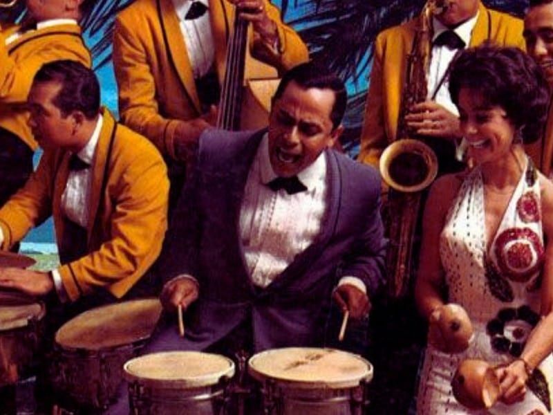
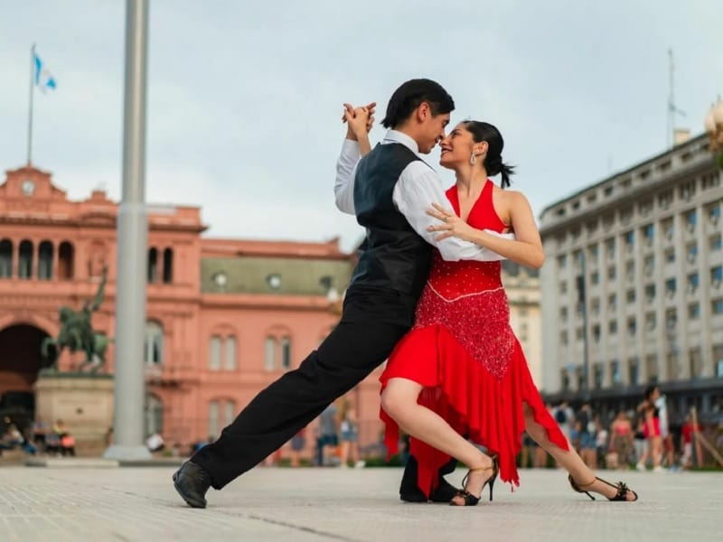
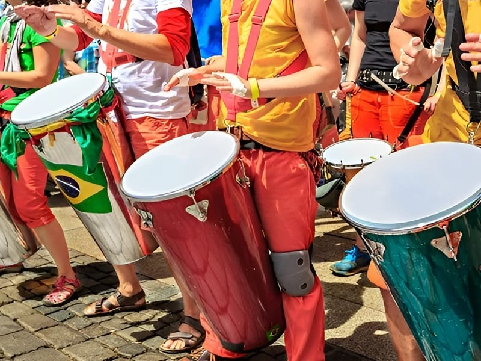
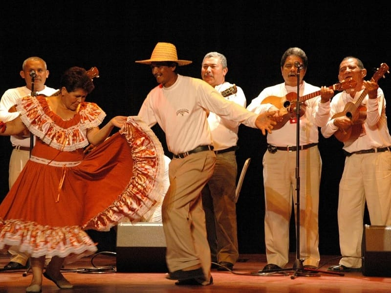

Focos de Ritmo

Cumbia
Nacida en la costa Caribe, la Cumbia es el ritmo mestizo por excelencia, un diálogo entre las gaitas indígenas y los tambores africanos.

Salsa
Más que un ritmo, es un movimiento que combina el Son cubano, el Mambo y el Jazz. Vibrante y compleja.

Tango
Nacido en los arrabales portuarios, el Tango es la danza de la melancolía y la pasión.

Samba
El alma del Carnaval, la Samba es un ritmo africano-brasileño de percusión frenética y contagiosa.

Joropo
Considerado el baile nacional de Venezuela, el Joropo es una fiesta de zapateo vibrante y elegancia campesina.